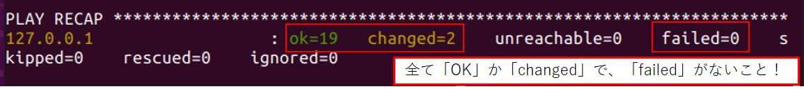

AKARI Light環境のセットアップ
RaspberryPiにAKARI Light用の環境セットアップをしていきます。
必要なもの
AKARI Light(RaspberryPi OSインストール済み)
キーボード
マウス
ディスプレイ
AKARI Lightの起動
AKARI Light前面のカバーを外し、DCジャックにACアダプタを接続します。
{kind=link}
ディスプレイ、キーボード、マウスを接続します。
ACアダプタをコンセントに差し込むと、AKARI LightのRaspberryPi OSが起動します。
apt upgradeの実行
まずはaptパッケージのupgradeをします。
ターミナルを開いて、下記コマンドを実行します。
sudo apt update
sudo apt upgrade
akari_softwareレポジトリのclone
RaspberryPiにakari_softwareレポジトリをcloneします。
homeディレクトリ直下で下記のコマンドを実行します。
必ずhomeディレクトリで実行してください。home/以外へのcloneは後のセットアップのエラーの元になります！
cd ~/
git clone https://github.com/AkariGroup/akari_software.git
git submoduleのclone
akari_softwareレポジトリ内には、いくつかのライブラリがsubmoduleとして含まれています。
これらのsubmoduleもcloneする必要があります。
akari_softwareの直下に移動します。
cd ~/akari_software
下記コマンドでsubmoduleの設定を初期化します。
git submodule update --init --recursive
ansibleを用いたセットアップ
AKARIのセットアップには、ansibleというセットアップツールを用います。
下記コマンドでansibleのセットアップ環境に移動します。
cd ~/akari_software/setup/ansible
下記コマンドで、ansibleによる環境セットアップを実行します。
./run-ansible.py -i hosts ./system.yml -K --diff -c local -e light=true
BECOME passwordを聞かれます。
BECOME passwordには、Ubuntuのログインパスワードを入力します。
初回実行時は時間がかかるので、終了までしばらく待ちます。
このセットアップでは、下記の様なタスクが自動で実行されます。
ライブラリのインストール
ユーザー権限の設定
dynamixel、M5Stack、OAK-DなどのUSB周辺機器の接続設定
M5Stackへのソフト書き込み
全てがOK(既に変更済み)またはchanged(変更あり)になっており、failed=0であればOKです。
{kind=link}
本体の再起動
一旦RaspberryPi OSをシャットダウンし、AKARI Light本体を再起動してください。
以上でansibleによるセットアップは完了です。
次はfeetechサーボのセットアップを行います。